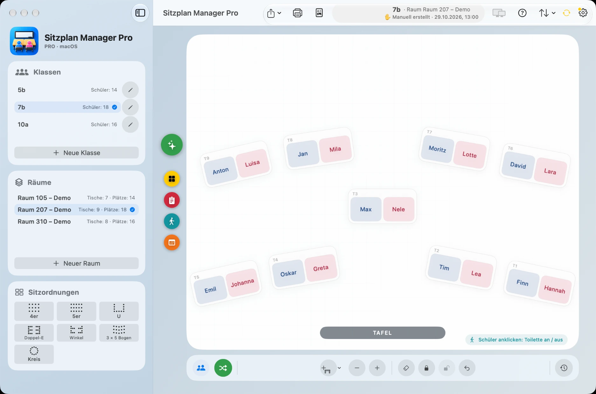
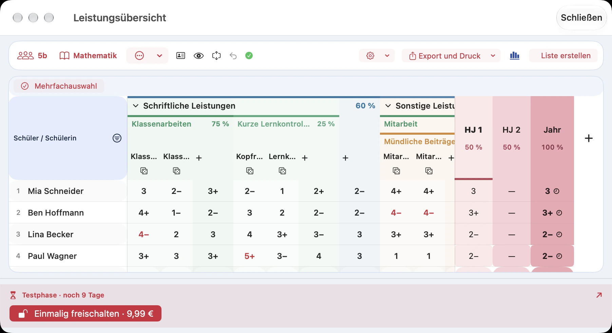

Interaktives Tutorial
Klicke auf eine Zahl im Screenshot oder öffne das passende Thema darunter. Die Screenshots zeigen die Mac-Version mit Beispieldaten.
Sitzplan und Unterrichtswerkzeuge

1Klassen anlegen
Wähle links eine vorhandene Klasse oder klicke auf „Neue Klasse“. Mit dem Stift neben der Klasse öffnest du die Bearbeitung.
2Raum auswählen
Wähle einen Raum passend zur Klasse. Die Liste zeigt dir die Zahl der Tische und Plätze. Mit „Neuer Raum“ richtest du einen weiteren Raum ein.
3Sitzordnung wählen
Wähle eine Vorlage wie U-Form oder Kreis, um das Tischlayout an deinen Raum anzupassen.
4Sitzbedingungen festlegen
Klicke auf den Stift neben der Klasse, um ihre Sitzbedingungen zu bearbeiten. Lege zum Beispiel fest, dass zwei Personen nicht nebeneinandersitzen dürfen oder dass eine Person an einem der ausgewählten Tische sitzen muss. Beim Auslosen werden diese Bedingungen berücksichtigt.
5Gelb · Unterrichtswerkzeuge
Öffne Werkzeuge wie Timer, Team-Einteilung, Entscheidungsrad, Lautstärkeampel oder Secret Student.
6Rot · Notenmodul
Öffne die Leistungsübersicht und wähle dort Klasse und Fach. Die zweite Abbildung zeigt, wie du deine Notenkategorien aufbaust.
7Türkis · Toilettenzeiten
Aktiviere den Modus und klicke den Namen auf dem Sitzplan an, um den Toilettengang zu starten. Klicke bei der Rückkehr erneut auf denselben Namen.
8Orange · Stundenplan
Öffne den Stundenplan, um deine Unterrichtsstunden im Überblick zu sehen.
9Grüne Pfeile · Sitzplätze auslosen
Mit den grünen Pfeilen unten kannst du eine neue Sitzordnung auslosen. Klicke oder tippe auf den grünen Button mit den Sternen, um die Sitzordnung auszulosen. Mit einem Rechtsklick am Mac oder langem Drücken auf dem iPad öffnest du die Auswahl für den Auslosungsmodus.
10Präsentation öffnen
Über das Monitorsymbol öffnest du die Präsentationsansicht für den Unterricht. Diese Funktion ist nur verfügbar, wenn du einen externen Bildschirm angeschlossen und ihn am Mac als erweiterten Bildschirm eingerichtet hast.
Notenmodul und Kategorien

1Klasse und Fach wählen
Wähle oben die Klasse und das Fach. Im Beispiel ist das Notenbuch für Mathematik in der 5b geöffnet.
2Hauptkategorie anlegen
Nutze das große Plus rechts für einen neuen Hauptbereich wie „Schriftliche Leistungen“. Gib dem Bereich einen Namen und ergänze bei Bedarf Unterbereiche.
3Unterkategorien und Farben
Öffne die Optionen des übergeordneten Bereichs, um einen Unterbereich anzulegen. Die Farbe zeigt automatisch die Ebene an. Blau steht für Hauptbereiche, Grün für Unterbereiche und Orange für die dritte Ebene. Im Bild liegt „Mündliche Beiträge“ unter „Mitarbeit“.
4Kategorien gewichten
Klicke auf die Prozentzahl eines Bereichs, um sein Gewicht zu ändern. Im Beispiel zählen schriftliche Leistungen 60 %. Innerhalb dieses Bereichs zählen Klassenarbeiten 75 % und kurze Lernkontrollen 25 %.
5Leistung hinzufügen und benoten
Mit dem kleinen Plus bei den Leistungsspalten fügst du zum Beispiel eine weitere Klassenarbeit hinzu. Klicke danach in eine Tabellenzelle, um die Note für die Person in dieser Zeile einzutragen.
6Halbjahres- und Jahresnoten
Lies rechts die Ergebnisse für HJ 1, HJ 2 und das Schuljahr ab. Das Beispiel zeigt eine Gewichtung von je 50 % für die beiden Halbjahre.
7Export und Druck
Öffne „Export und Druck“, um die verfügbaren Ausgabeoptionen für deine Leistungsübersicht zu sehen.
8Statistik öffnen
Klicke auf das Balkendiagramm, um dir die Leistungsstatistik der Klasse anzusehen.